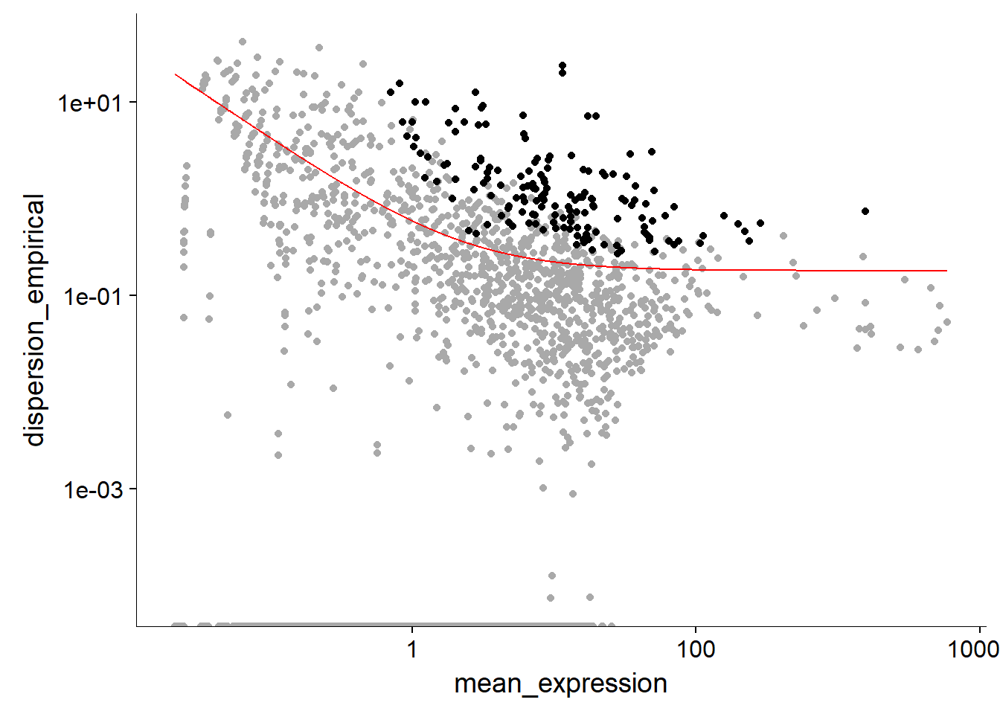

Chapter 6 Heatmap Viewing of Informative Genes Used to Predict Sample Trajectory (#hm)
6.1 Transform RPKM to RPC
human <- newCellDataSet(as.matrix(expr),
phenoData = pd,
featureData = fd,
lowerDetectionLimit = 0.1,
expressionFamily = tobit(Lower = 0.1))
rpc_matrix <- relative2abs(human, method = "num_genes")
human <- newCellDataSet(as(as.matrix(rpc_matrix), "sparseMatrix"),
phenoData = pd,
featureData = fd,
lowerDetectionLimit = 0.5,
expressionFamily = negbinomial.size())
human <- estimateSizeFactors(human)
human <- estimateDispersions(human)## Warning: Deprecated, use tibble::rownames_to_column() instead.## Removing 77 outliersexpr(RPKMS), phenoData(samples) and featureData(genes) are pre-processed in the back end, from the original RPKM file. And then transform RPKM data to mRNA counts data(RPC = RNA per cell), which make the use of negative binomial distribution possible and thence claimed more suitable for this Monocle 2 software.
The transformation was done by an algorithm called Census. And you can find the whole documentation here at Monocle 2.
6.2 Set ordering genes and reduce demisionality
" Monocle looks for genes that vary in “interesting” (i.e. not just noisy) ways, and uses these to structure the data."
— Monocle Mannual
This is the feature selection step in the Monocle’s machine learning algorithm for this job, which has major impact of the shape of the trajectory to be constructed(Trapnell 2017).
human <- detectGenes(human, min_expr = 0.1)
expressed.gene <- row.names(subset(fData(human), num_cells_expressed >= 35))
diff_test_res <- differentialGeneTest(human[expressed.gene,],
fullModelFormulaStr = "~time + person", cores = 2)
ordering_genes <- row.names (subset(diff_test_res, qval < 0.000001))
human <- setOrderingFilter(human, ordering_genes)
plot_ordering_genes(human)
human <- reduceDimension(human, max_components = 2,
method = 'tSNE')
human <- orderCells(human,reverse = T)The gene selection algorithm a machine learning algorithm inside monocle 2, and the model ~time + person means the gene expression was modeled as a linear function of time point and person(individual difference), then due to the variability of the human dataset, tens of genes tend to be varied on different time point and individual.
Therefore I tried to decrease the number of genes entering in the heatmap by very stringent q-value cut-off(<1e-6).
157 of 12518 de genes pass the q-value cut-off and are used to plot the heat map. (from a total of 22047 genes that are defined express “interestingly” as described in Section 3.1).
6.3 Ordering the samples in pseudotime/time
plot_cell_trajectory(human, color_by = "time")FIGURE 6.1: Sample trajectory colored by real time points
plot_cell_trajectory(human, color_by = "Pseudotime")FIGURE 6.2: Same trajectory colored by Pseudotime
6.4 heatmap, samples ordered by Pseudotime
ordering.expr <- rpc_matrix[ordering_genes,grep("post",rownames(pData(human)))][,order(pData(human)[grep("post",rownames(pData(human))),]$Pseu)]
ordering.expr <- log(ordering.expr + 1)
pheatmap(
mat = ordering.expr,
scale = "row",
color = brewer.pal(4, "Set3"),
border_color = NA,
show_colnames = FALSE,
show_rownames = T,
#annotation_col = col_ann,
#annotation_colors = color_ann,
cluster_cols = FALSE,
drop_levels = TRUE,
fontsize = 14,
main = "Scaled log-rpc heatmap\nPOST sample ordered by Pseudotime"
)(#fig:good_hm)columns ordered by rank(Pseudotime)
References
Trapnell, Cole. 2017. Monocle: Clustering, Differential Expression, and Trajectory Analysis for Single- Cell Rna-Seq. https://bioconductor.org/packages/release/bioc/html/monocle.html.